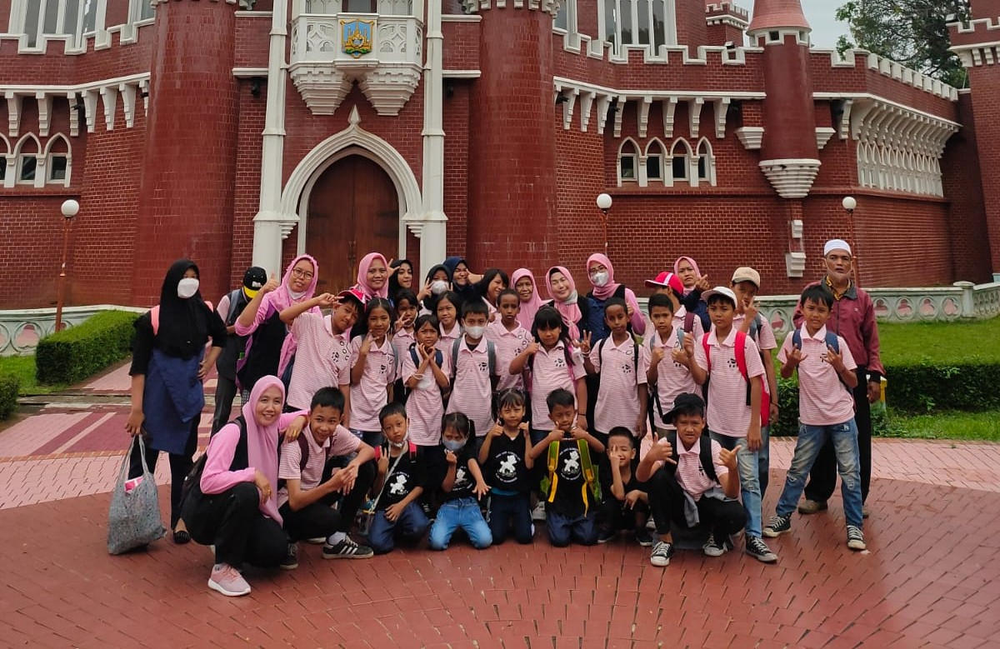

Panti Asuhan Kuntum Teratai
"Sebaik-baik manusia adalah yang paling bermanfaat bagi manusia lainnya"
"Sebaik-baik manusia adalah yang paling bermanfaat bagi manusia lainnya"
Berawal dari keinginan meneruskan jejak orang tua, Nina Agustina merintis Panti Asuhan Kuntum Teratai. Pada tahun 2004, kegiatan dimulai dengan mendirikan sekolah Raudhatul Athfal (RA) gratis di kediamannya di Kebon Baru, Tebet. Hingga kini, Kuntum Teratai terus berkomitmen untuk mendedikasikan diri sebagai lembaga yang ikut serta dalam tumbuh kembang anak dan menjaga kesejahteraan lansia, khususnya untuk masyarakat di area tinggal bantaran Sungai Ciliwung.
Memenuhi Kebutuhan tumbuh kembang anak yang berupa perlindungan dan kasih sayang kepada anak yatim, piatu, anak terlantar dan tidak mampu sehingga dapat tumbuh dan berkembang secara baik sebagai tunas-tunas bangsa dan negara dan sejajar dengan anak-anak lainnya yang hidup layak dan normal.

Pilar utama pelayanan kami untuk masyarakat sekitar dan anak asuh.
Menyediakan hunian sementara yang aman dan layak bagi 36 anak asuh dari keluarga kurang mampu.
Program day care gratis bagi 25 anak-anak warga sekitar yang orang tuanya bekerja sebagai buruh atau ART.
Pendidikan Anak Usia Dini (10 peserta) dan Raudhatul Athfal (17 peserta) berbasis gratis untuk mempersiapkan anak masuk ke jenjang Sekolah Dasar.
Berbagai inisiatif untuk menghadirkan kebahagiaan dan edukasi bagi anak asuh.
Rangkaian kegiatan spesial di bulan suci untuk mempererat kebersamaan dan berbagi rezeki.
Program rekreasi yang tidak hanya menyenangkan, tetapi juga memberikan wawasan baru bagi anak-anak asuh.
Program pembelajaran membaca Al-Quran dan dasar-dasar ilmu agama Islam untuk 30 peserta didik dari tingkat TK hingga SD.
Setiap bantuan Anda sangat berarti bagi keberlangsungan pendidikan dan kehidupan anak asuh kami.
Anda dapat datang langsung untuk menyalurkan bantuan secara transparan dan bertemu langsung dengan anak-anak asuh.
Alamat:
Jl. Kampung Melayu III No. 29, RT/RW 05/09, Bukit Duri, Tebet, Jakarta Selatan 12840
Salurkan donasi melalui transfer ke rekening resmi yayasan.
*Mohon konfirmasi bukti transfer ke WhatsApp pengurus.
Scan kode QRIS untuk donasi cepat dan aman melalui e-wallet atau mobile banking.

Gunakan aplikasi apa pun yang mendukung QRIS.
Kami berkomitmen untuk mengelola setiap donasi secara terbuka dan dapat dipertanggungjawabkan.
Laporan penggunaan dana dipublikasikan secara rutin kepada donatur dan publik.
Setiap penyaluran bantuan didokumentasikan dan dibagikan sebagai bentuk bukti nyata.
Pengurus melakukan pemeriksaan internal secara berkala untuk memastikan akuntabilitas.
Bagian struktur kepengurusan yayasan, seksi-seksi operasional, serta kanvas profil dan galeri foto anak-anak asuh telah dipindahkan ke halaman tersendiri dengan kanvas foto yang siap Anda lengkapi.
Dokumentasi foto kegiatan kini ditampilkan dalam bentuk album kolase interaktif yang dapat di-scroll dan diperbarui setiap pekannya: mulai dari Update Mingguan Terbaru, Ramadan Berkah, Pendidikan & TPA, Rekreasi Edukatif, hingga Kunjungan Donatur.
Kami terbuka untuk pertanyaan, kunjungan, dan kolaborasi.
Jl. Kampung Melayu III No. 29, RT/RW 05/09,
Bukit Duri, Kec. Tebet, Jakarta Selatan 12840
0812-8179-8653 | 0878-8017-8000